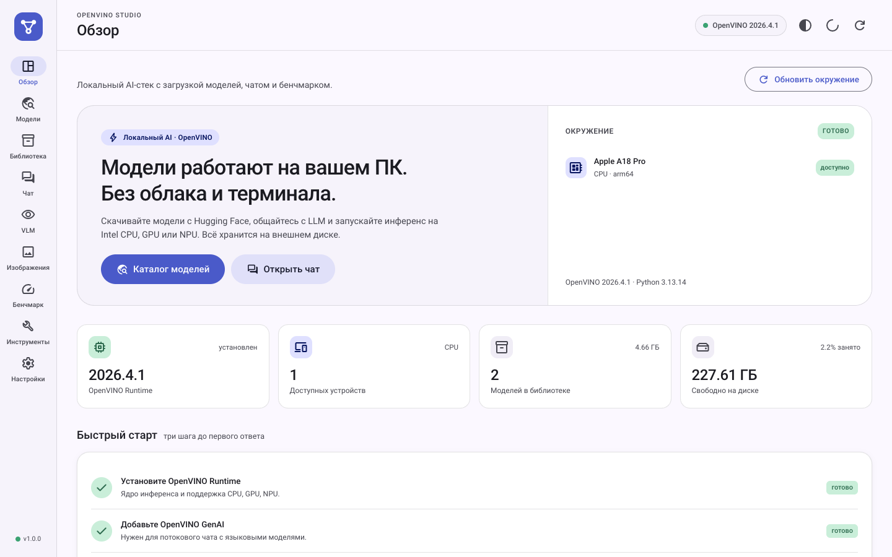
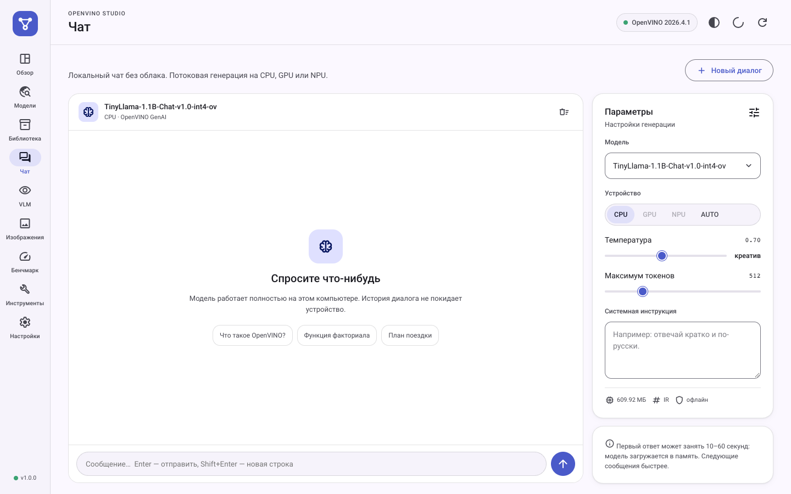
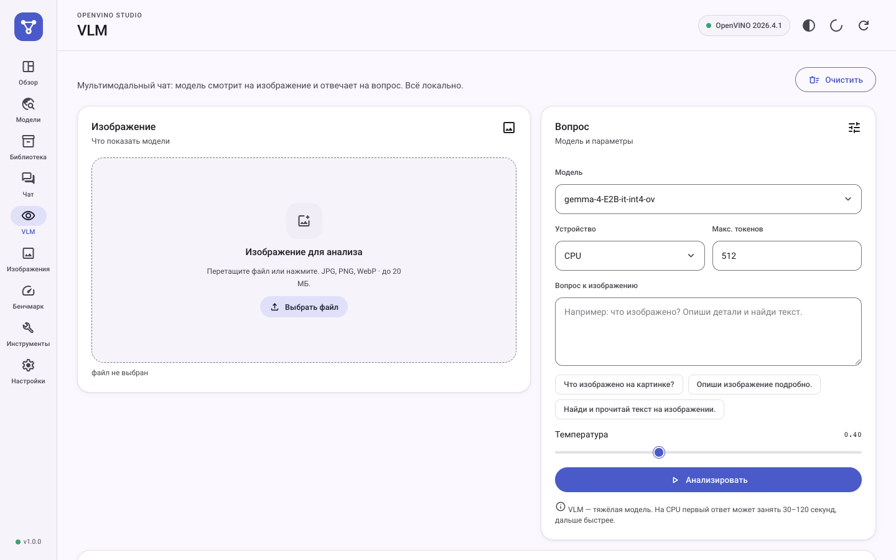
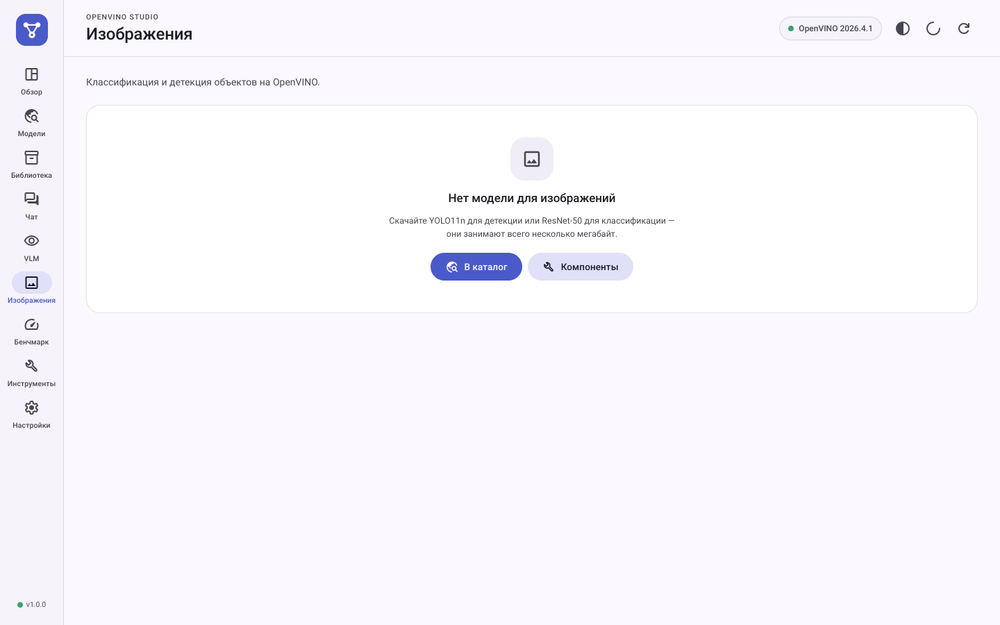
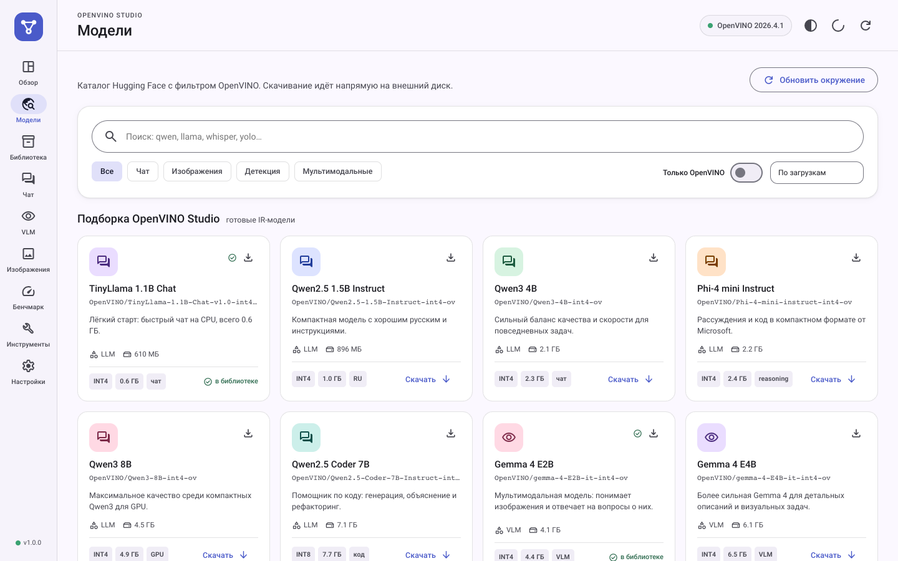
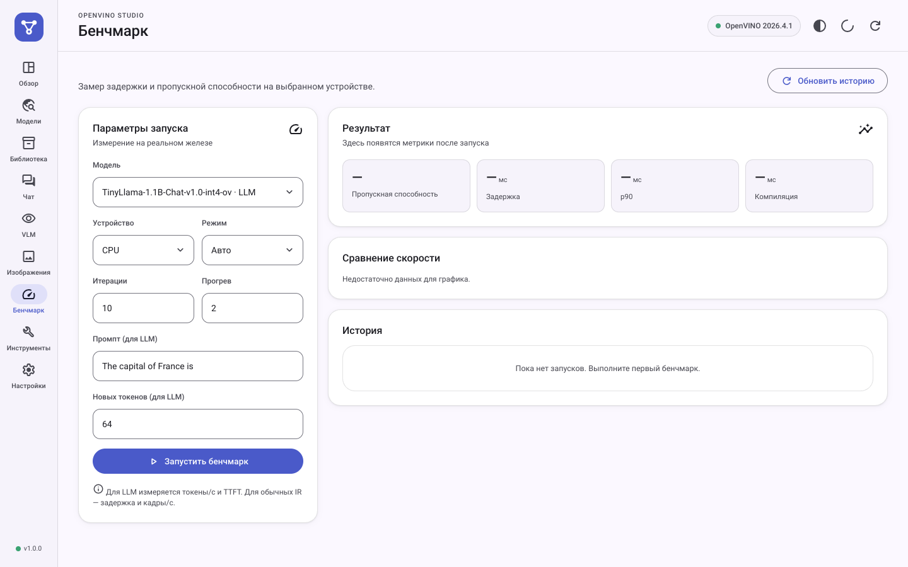
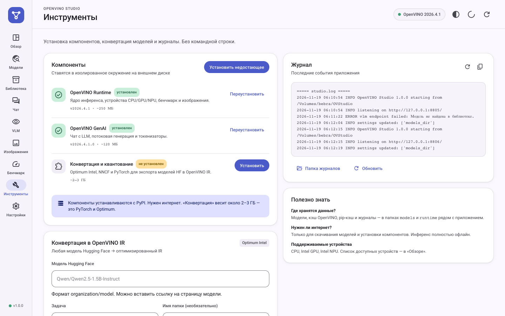

Чат с LLM
Потоковые ответы, температура, top-p, системная инструкция и история.
Чат, анализ изображений, бенчмарк и конвертация — в одном окне. Модели скачиваются с Hugging Face и работают локально.

Потоковые ответы, температура, top-p, системная инструкция и история.
Вопрос по картинке, детекция YOLO и классификация ResNet.
Каталог и поиск по Hugging Face. Прогресс, ETA, докачка, отмена.
Latency, throughput, TTFT и история замеров.
Hugging Face → OpenVINO IR: INT4, INT8, FP16.
Модели, кэш и журналы — на вашем диске.
Все разделы в одном окне. Нажмите на скриншот, чтобы открыть его в полном размере.






Выберите сборку для своей системы и распакуйте в любую папку.
Windows — OpenVINO Studio.vbs, macOS — OpenVINO Studio.app, Linux — start-openvino-studio.sh.
«Инструменты» → «Компоненты»: OpenVINO Runtime и GenAI. Окружение создаётся рядом с приложением.
«Модели» → «Скачать». Дальше — «Чат», «VLM», «Изображения» или «Бенчмарк».
Открытый код, лицензия MIT. Сборки для Windows, macOS и Linux — в GitHub Releases.